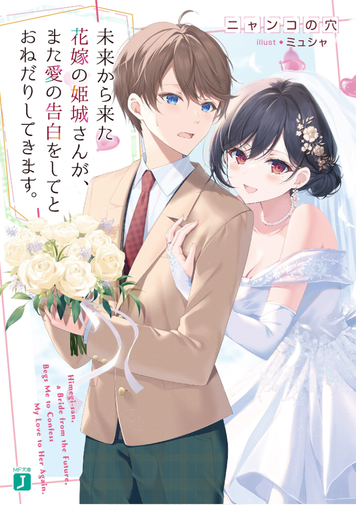

Himegi-san a Bride from the Future Begs Me to Confess My Love to Her Again
Novel Info's
Status: Ongoing
Genre: Comedy, Romance, Seinen
Author: Nyanko No Ana
Illustrator: Mucha
Volumes: 2
Original Publisher: Kadokawa
English Publisher: N/A
Fan Translation: Hiraeth Translation
Description/Sypnosis
『Sorry. I can’t respond to your feelings——』
The day I first set foot in this school, I saw Himegi-san and instantly felt what many describe as ‘love at first sight.’
Being in the same class as her, getting excited, getting carried away by my emotions, writing a love letter without much thought, calling her out to the empty classroom after school——and as expected, only to be rejected within a mere ten seconds.
Looking back now, what chances did I really think I had?
As I returned home with a heavy heart, I was greeted by a sight I couldn’t believe——Touka Himegi in a wedding dress!
To my surprise, she claimed to be Himegi-san from six years into the future, and in that timeline, she was my wife.
She apparently has some kind of purpose coming to this timeline——
Download Links
Epub & Pdf